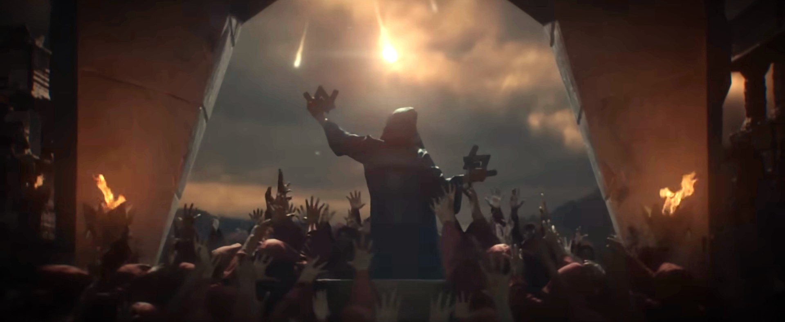
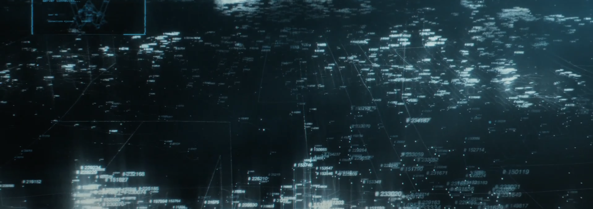

The Timeline
One of the most intriguing aspects of the World of Walker Universe is its timeline! Because the music videos were not released in
chronological order, piecing together the sequence of events can be a challenge. Newer videos often explore events that occurred long
before older ones, adding to the complexity of the story. This is the definitive unofficial timeline to help you navigate the eras of
this fascinating universe.
The World of Walker Timeline is divided into four major Eras, each representing a significant chapter in its rich history:
- The Ancient Era (~1000 BC)
- The Modern Era (2015-2030)
- The Dark Era (2030-2090)
- The Future Era (2090-onward)
Each of these Eras has many important events and characters that add to the meaning of the story. Let's Dive Into It Together.

The ancient era in the World of Walker lore marks the origin of the storyline, dating back 3,000 years to a highly advanced civilization called the Walkers (now referred to as the Ancient Walkers). Located in the dense jungles of Vietnam, this society possessed groundbreaking technology, including the AVI-8 drones and the Spectre, a tool capable of predicting catastrophic events.
Videos Covered
The Beginning of the End
Around 3000 BC
The Ancient Walkers used The Spectre to discover two world-changing events. The first was a meteor storm that would soon destroy their civilization. The second was a massive solar storm that would devastate technology for a future civilization—our modern era.

Preparing for the Future
Around 3000 BC
Knowing their end was near, they dedicated nearly all their resources to creating time capsules that would preserve their knowledge and technology. These capsules included two main gifts for future civilizations: the AVI-8 drones and a prophecy disk. The disks contained messages warning of the dark future to come. In the end, they created eight time capsules and buried them at locations around the world.
The End of the Ancient Walkers
Around 3000 BC
The foretold meteor storm arrived, filling the sky with fire. Many Ancient Walkers sought shelter inside Son Doong Cavern. While most perished in the disaster, a few survived to tell stories of this ancient civilization.

The modern era spans from 2015 to 2030, marking the rediscovery of the ancient Walkers' lost civilization. This period introduces Lily, an archaeology student and key figure in the Walker Network, whose groundbreaking research uncovers traces of the advanced society. Her findings attract the attention of Red Nexus, a powerful tech corporation.
Videos Covered
Lily's Discovery
2015
Lily Cadiuex emerged as a dedicated archaeology student at a renowned French university, where her interest in “Out of Place Artifacts” set her apart. These enigmatic objects, seemingly too advanced for their historical periods, inspired her to propose a bold theory: the existence of an advanced civilization from around 1000 BC. Though her peers and professors dismissed her ideas as speculative, she remained undeterred, channeling her energy into fieldwork in pursuit of evidence.
The Discovery of Stone Formations
2015
Her determination culminated in the discovery of a series of unusual stone formations at eight locations across the globe, including one in northern France. When plotted on a map, these sites revealed a pattern resembling the Alan Walker logo. This breakthrough not only lent credence to her hypothesis but also connected the formations to an ancient, technologically advanced civilization.
The Excavation in Northern France
2015
Armed with compelling findings, she persuaded her university to lead an excavation in northern France. The resulting excavation unearthed artifacts and structures that rewrote the historical narrative, substantiating the existence of the Ancient Walker civilization. This discovery propelled Cadiuex into international prominence, establishing her as a pivotal figure in the exploration of humanity's forgotten past.

The Walker Excavations
2016-2017
Following the discovery of the Ancient Walker sites, Lily Cadiuex's groundbreaking research attracted the attention of Red Nexus, a prominent tech corporation. Eager to capitalize on the historical significance of her findings, Red Nexus offered to fund her ongoing excavations. With their financial backing, Lily gained access to advanced equipment and the resources necessary to expand her research, uncovering even more artifacts that hinted at the sophistication of the Ancient Walker civilization.

Soured Relations
2018-2019
Over time, Lily Cadiuex's partnership with Red Nexus began to unravel. While their funding had initially been a boon, she became increasingly suspicious of their intentions. Red Nexus's tight control over her findings, combined with their reluctance to disclose how they intended to use the discoveries, raised red flags. Though Lily had not uncovered a definitive plot, her instincts warned her that their motives might be more profit-driven—or worse. Unable to reconcile her unease, she made the difficult decision to sever ties with the corporation, even as it jeopardized her research. Determined to protect the integrity of her work, Lily began concealing key artifacts and withholding critical details to prevent misuse.
Formation of the Modern Walker Network
2019
During this tumultuous period, Lily connected with her good friend Alan Walker (Walker #0), whose expertise and shared vision aligned with her quest for truth. Together, they established the modern Walker Network, a decentralized alliance committed to safeguarding and continuing her discoveries. The Network would act as a secure platform to ensure the protection and preservation of the Ancient Walkers' secrets.
Discovery Of Son Doong Cavern
2019
Lily's next major discovery was that of a prophecy disk in Son Doong Cave, Vietnam, linked to the Ancient Walkers. The cave, known for its challenging terrain, had remained largely unexplored by archaeologists. Guided by a local explorer, Lily ventured into its depths and discovered the disk in a cavern illuminated by sunlight. The disk contained intricate carvings and predictions about future events, hinting at a catastrophic era yet to come. This discovery deepened the mystery surrounding the Ancient Walkers and their ultimate demise.

Lily's Final Discovery
~2027
After years of dedicated research, Lily's efforts culminated in a monumental breakthrough. She and her team finally decrypted the cryptic messages left behind by the Ancient Walkers in the time capsules, revealing their profound secrets. Through the deciphered Prophecy Discs, Lily uncovered the truth about the solar storm foretold by the Walkers—an event that would devastate the planet and lead to the collapse of modern civilization. The Ancient Walkers had long predicted the chaos that would follow, and their cryptic instructions outlined how future generations could survive the coming disaster.

All hands on deck!
~2027-2030
In a bid to prepare humanity for the impending solar storm, the Walkers launched a covert operation, orchestrating the mass production of the ancient AVI-8 drones. These drones, long hidden in the shadows of time, were designed to play a pivotal role in the survival of future generations. Alongside the drones, the Walkers buried new time capsules, filled with essential tools and knowledge to guide humanity through the coming disaster. This strategic effort was not only aimed at survival but also at ensuring the future rebuilding of society, empowering the survivors to create resilient, thriving communities in the aftermath of the storm.
The Dark Era
The Dark Era, spanning from 2030 to 2090, is the most intense and tumultuous period in the World of Walker storyline. Following the devastating solar storm, the world is plunged into chaos, with widespread looting, riots, and societal collapse. In this era, the tech company Red Nexus seizes control, establishing a strict and oppressive regime. Amidst this turmoil, a small group of resilient Walkers, led by key figures like 28300 and Walker 22, form a resistance known as Unity Force. This period is marked by a brutal drone war between the militarized forces of Red Nexus and the determined Walkers, fighting to reclaim freedom and rebuild a shattered world.
The Solar Storm: Eleanor
2030
The solar storm, named Eleanor, marks the beginning of the Dark Era. Predicted by the ancient Walkers, Eleanor is a massive burst of gamma rays and charged particles violently ejected from the Sun. These particles cause widespread devastation, global communication outages, destroyed electrical grids, and the destruction of most modern technology. The immediate aftermath sees a collapse of societal order, as cities plunge into darkness and chaos ensues. Eleanor's impact is felt worldwide, triggering looting, riots, and a desperate struggle for survival. 4

Rise of Red Nexus
2030
In the aftermath of the solar storm, the world descended into chaos. Cities were engulfed in looting and riots, and societal structures crumbled. Amidst this turmoil, the tech company Red Nexus seized the opportunity to establish control. They were hired by governments to restore order, but their methods were harsh and oppressive. Red Nexus implemented a strict regime, using their advanced RX8 drones to surveil and control the population.
Wk #28300 is Captured
2030
While preparing for the solar storm, she discovered that the Red Nexus has been quietly reverse engineering the technology found in the research and using it to build militarized combat drones ("Called the RX-8"). Fearing what these drones could do, she warned the Modern Walkers. Unfortunately she was captured by Red Nexus after the storm. However, thanks to the works of Walker #22, who managed to infiltrate the Red Nexus's compound, they were able to get the information. Which she had writen on the walls of a safe house using luminescent paint before her capture. While we know lily escapes from Red Nexus somehow, details about the escape are unknown.
Formation of Unity Force
2035-2050
Despite the oppressive control of Red Nexus, a small group of resilient Walkers refused to submit. Led by key figures like 28300 and Walker 22, they formed a resistance group known as Unity Force. This group consisted of highly trained drone pilots and skilled technicians who were determined to fight back against Red Nexus. They began to develop a weaponized version of the AVI-8 drones, which were crucial in their efforts to challenge the authoritarian regime. This the beginning of organized resistance and the hope of reclaiming freedom. Over the upcomming years they expanded their efforts, training new pilots and building more AVI-8 Drones.
Unity Force Attacks the Red Nexus HQ
2050
The drone war begins with a daring and strategic assault by Unity Force on the Red Nexus headquarters. Led by key figures such as Walker 0, and Walker 22, Unity Force launched a surprise attack using their weaponized AV8 drones to breach the heavily fortified defenses. The initial success of the attack galvanizes support for Unity Force, inspiring more Walkers to join the fight for freedom and justice, setting the stage for the intense battles that will define the Dark Era.
The Drone Wars
2050-2090
The conflict between Red Nexus and Unity Force escalated into a brutal and prolonged drone war. This war, which lasted for 40 years, saw both sides deploying advanced drone technology in a bid for dominance. The RX8 drones of Red Nexus clashed with the AV8 drones of Unity Force in numerous battles across the globe. The war was marked by significant casualties and widespread destruction, as both sides fought fiercely for control. The drone war was a defining feature of the Dark Era, highlighting the intense struggle for power and the high stakes involved.
The Future Era, spanning from 2090 to 2100, follows the aftermath of the devastating Drone War. In a world left in ruins, small, isolated societies struggle to survive with limited resources and minimal technology. The emergence of buried time capsules from the Ancient Walkers becomes a turning point, delivering messages, tools, and hope to the remaining survivors. Through the rediscovery and mastery of advanced technologies, a new generation of Walkers begins constructing the World of Walker—a safe haven and symbol of unity for humanity's next chapter.
Formation of the future walkers
2091
The rediscovery of the Modern Walkers' time capsules in 2091 marked the dawn of a new era. Survivors of the Drone War stumbled upon these capsules, guided by faint but persistent audio signals emitted by their advanced internal systems. Inside were prophecy discs, fragments of the Walkers' history, and instructions for utilizing AVI-8 drones to rebuild society. These discoveries unified disparate groups of survivors under a shared purpose: to reclaim the brilliance of the past and create a vision for a brighter future.
Reclaiming what was lost
2092-2098
The survivors, now known as the Future Walkers, began to deploy the AVI-8 drones across the ruins of the world. These drones, programmed with unparalleled scanning and construction capabilities, cataloged what remained of humanity's architectural, artistic, and technological achievements. From the ashes of destruction, they meticulously documented and reconstructed vital infrastructure, laying the foundation for the rebirth of human civilization. This monumental effort was known as the Reclamation Project.
Creating the World of Walker
2100
By 2098, the collected efforts of the Future Walkers culminated in the creation of the World of Walker. This advanced city, constructed entirely by the AVI-8 drones, symbolized a harmonious blend of human and machine ingenuity. The city stood as a beacon of hope, a sanctuary where humanity could thrive once more. Its gleaming towers, powered by renewable energy, served as a testament to what could be achieved through unity and determination.